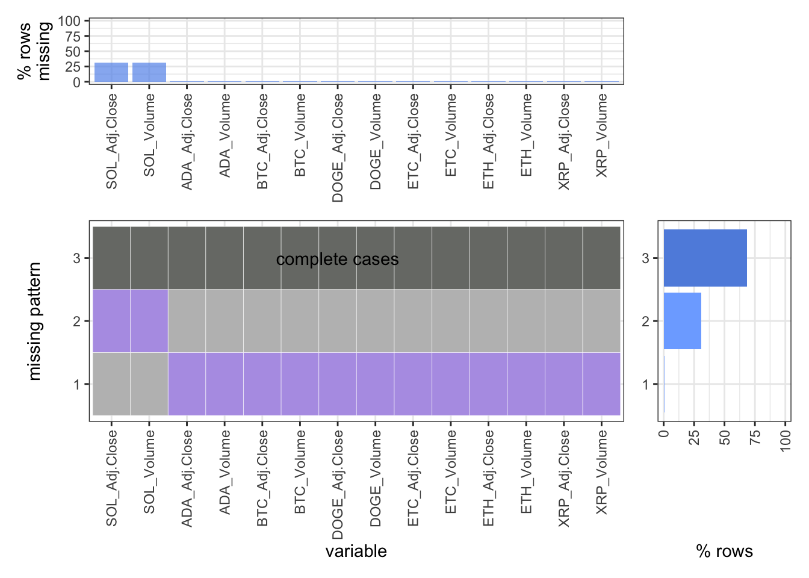
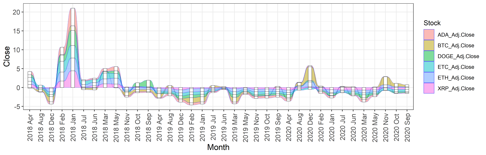
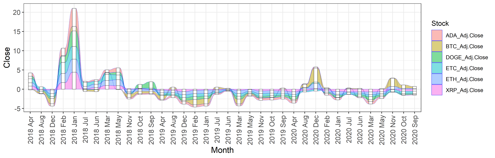
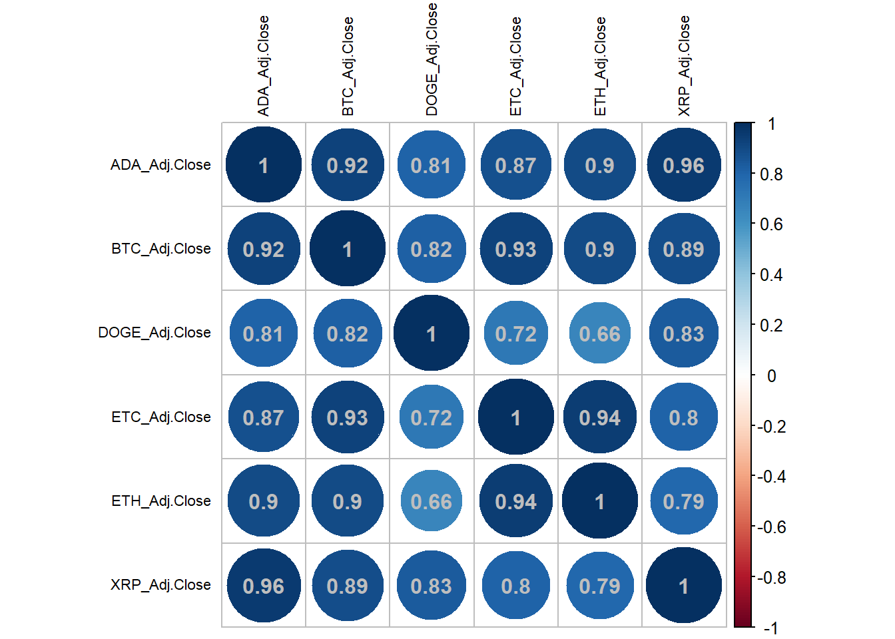
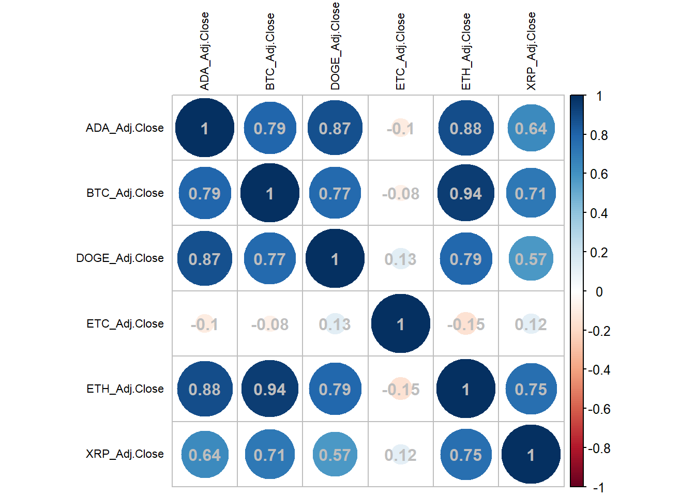
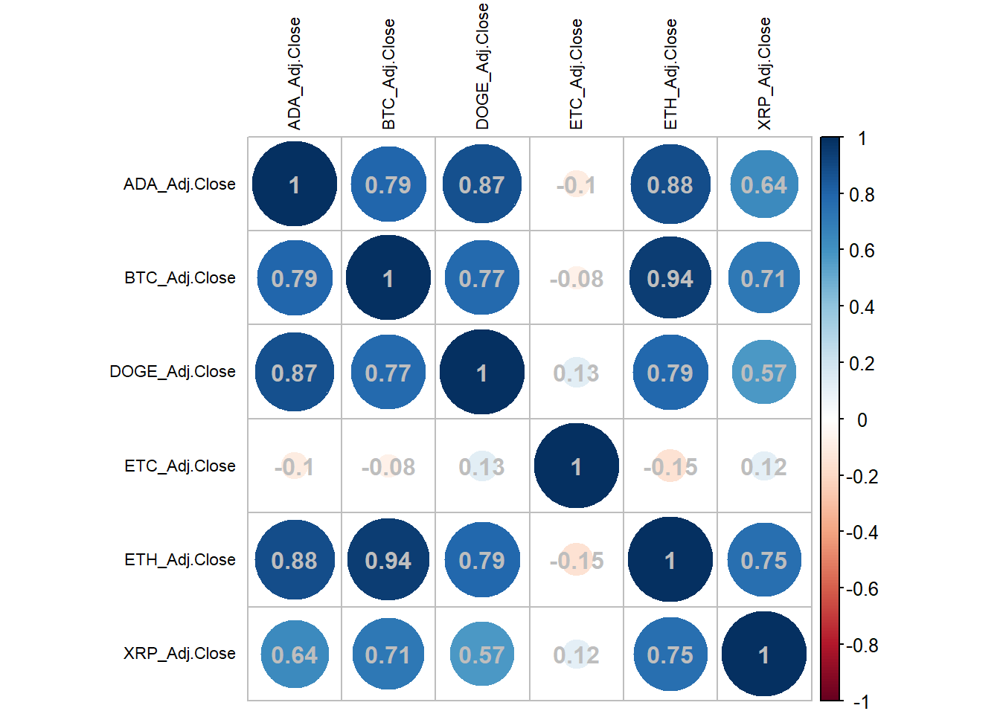

Chapter 5 Results



## [1] "English_United States.1252"
 

## [1] "BTC return during the halving month"## [1] 206.212891 123.830078 -91.127930 15.185547 90.416016 265.691406
## [7] 682.756836 -108.852539 -248.769532 -837.465820 -154.634766 202.681641
## [13] 465.509766 463.734375 -405.524414 48.816406 293.725586 55.835937
## [19] 2.462891 -206.056641 -441.219726 100.815429 26.709961 -418.918945
## [25] 116.566406 -71.881836 345.964844 344.733399 -86.626954 261.290040
## [31] -239.355469## [1] "BTC return range during these three years"## [1] -2940.642 1893.521
 
